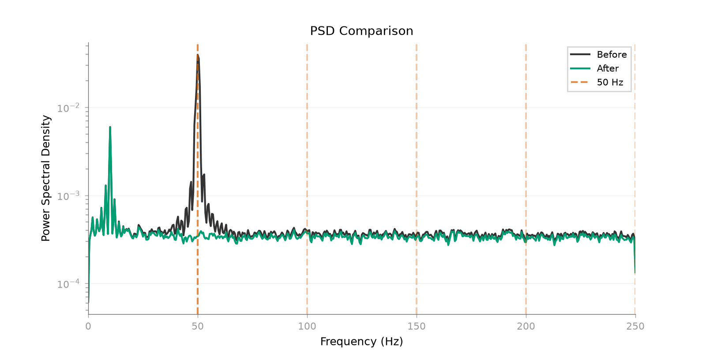
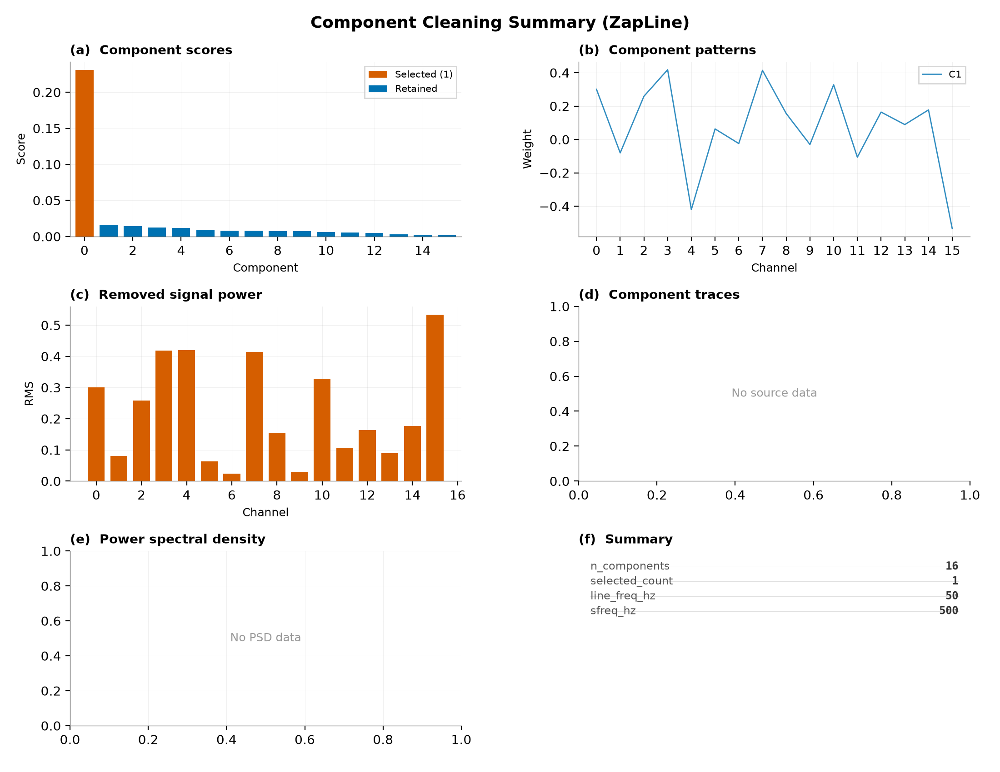
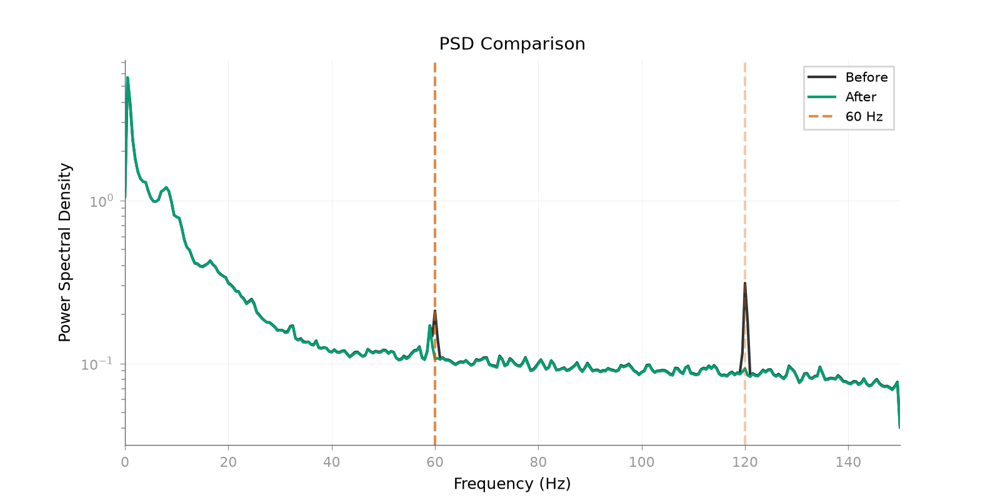
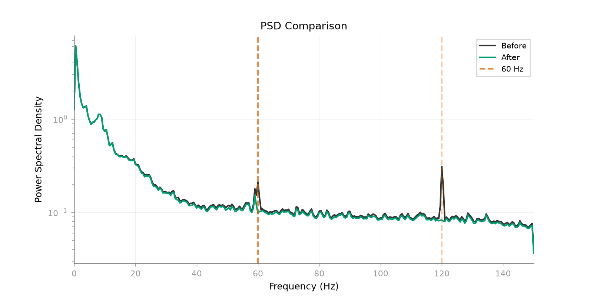
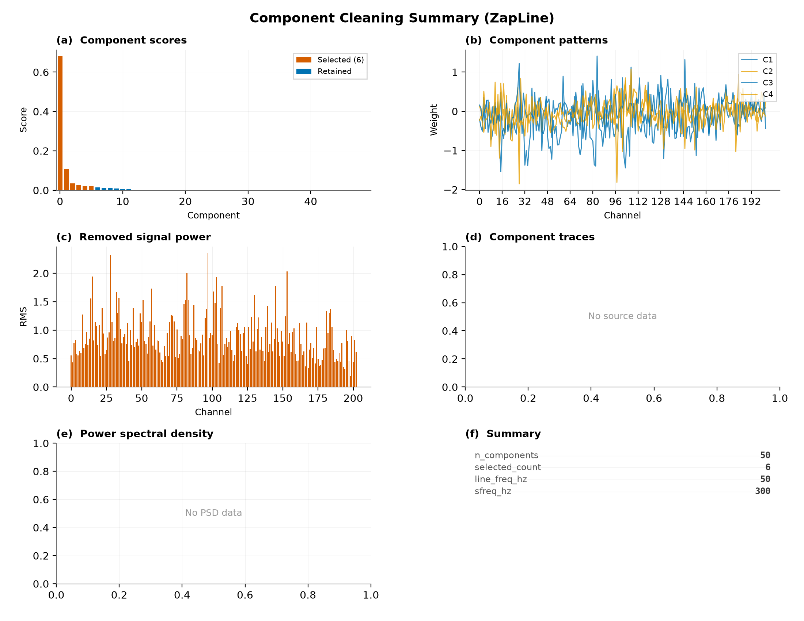

Note
Go to the end to download the full example code.
ZapLine: Epoched Data and Real Data Examples.#
This example shows how ZapLine can be applied when the data are naturally epoched, then extends the same workflow to real MNE Sample MEG data.
- Authors: Sina Esmaeili (sina.esmaeili@umontreal.ca)
Hamza Abdelhedi (hamza.abdelhedi@umontreal.ca)
Imports#
import mne
import numpy as np
from scipy import signal
from mne_denoise.viz import (
plot_component_cleaning_summary,
plot_psd_comparison,
)
from mne_denoise.zapline import ZapLine
Part 1: Synthetic Epoched Data#
Create epoched data with line noise to demonstrate ZapLine on trials.
print("Part 1: Synthetic Epoched Data")
# Parameters
sfreq = 500 # Sampling rate
n_epochs = 30
n_channels = 16
n_times = 250 # 0.5 seconds per epoch
rng = np.random.RandomState(42)
# Create spatial patterns
neural_pattern = rng.randn(n_channels)
neural_pattern /= np.linalg.norm(neural_pattern)
line_pattern = rng.randn(n_channels)
line_pattern /= np.linalg.norm(line_pattern)
# Generate epoched data
t = np.arange(n_times) / sfreq
epochs_data = np.zeros((n_epochs, n_channels, n_times))
for i in range(n_epochs):
# Neural signal (evoked-like)
neural_source = np.sin(2 * np.pi * 10 * t) * np.exp(-t / 0.2)
# Line noise (constant across epochs, different phase)
phase = rng.uniform(0, 2 * np.pi)
line_source = 1.5 * np.sin(2 * np.pi * 50 * t + phase)
for ch in range(n_channels):
epochs_data[i, ch] = (
neural_pattern[ch] * neural_source
+ line_pattern[ch] * line_source
+ rng.randn(n_times) * 0.3
)
print(f"Epochs data shape: {epochs_data.shape}") # (n_epochs, n_channels, n_times)
Part 1: Synthetic Epoched Data
Epochs data shape: (30, 16, 250)
Apply ZapLine to Epoched Data#
ZapLine expects 2D data, so we concatenate epochs for fitting. The important point is that the fit is done on a long 2D signal, then the cleaned data are reshaped back to the original epoch structure.
print("\nApplying ZapLine to epoched data...")
# Concatenate epochs for ZapLine
data_concat = epochs_data.transpose(1, 0, 2).reshape(n_channels, -1)
print(f"Concatenated shape: {data_concat.shape}")
# Apply ZapLine
est = ZapLine(line_freq=50, sfreq=sfreq, n_select=1)
est.fit(data_concat)
cleaned = est.transform(data_concat)
# Reshape back to epochs
cleaned_epochs = cleaned.reshape(n_channels, n_epochs, n_times).transpose(1, 0, 2)
print(f"Cleaned epochs shape: {cleaned_epochs.shape}")
Applying ZapLine to epoched data...
Concatenated shape: (16, 7500)
Cleaned epochs shape: (30, 16, 250)
Compare Before/After#
The PSD view should show the narrowband suppression clearly before we inspect component summaries.
# Use the reusable viz function for PSD comparison
plot_psd_comparison(data_concat, cleaned, sfreq=sfreq, line_freq=50, show=True)

<Figure size 1600x800 with 1 Axes>
Component Cleaning Summary#
# Show comprehensive cleaning summary
plot_component_cleaning_summary(
scores=getattr(est, "scores_", getattr(est, "eigenvalues_", None)),
selected_count=getattr(est, "n_removed_", 0),
patterns=getattr(est, "patterns_", None),
removed=data_concat - cleaned,
sources=getattr(est, "sources_", None),
sfreq=sfreq,
line_freq=50,
title="Component Cleaning Summary (ZapLine)",
show=True,
)

/home/runner/work/mne-denoise/mne-denoise/mne_denoise/viz/theme.py:272: UserWarning: This figure includes Axes that are not compatible with tight_layout, so results might be incorrect.
fig.tight_layout()
<Figure size 2200x1700 with 6 Axes>
Part 2: Real MEG Epoched Data (MNE Sample)#
Split a continuous real recording into fixed-length epochs, then concatenate those epochs explicitly for fitting.
print("\nPart 2: Real MEG Epoched Data")
sample_path = mne.datasets.sample.data_path()
raw_path = sample_path / "MEG" / "sample" / "sample_audvis_raw.fif"
raw_sample = mne.io.read_raw_fif(raw_path, preload=False, verbose="ERROR")
raw_sample.crop(0, 35).load_data().resample(300, verbose="ERROR")
grad_picks = mne.pick_types(raw_sample.info, meg="grad", exclude="bads")
raw_grad = raw_sample.copy().pick(grad_picks)
epochs_meg = mne.make_fixed_length_epochs(
raw_grad, duration=3.0, preload=True, verbose="ERROR"
)
meg_epochs = epochs_meg.get_data(copy=False)[:10] * 1e12
sfreq_meg = epochs_meg.info["sfreq"]
n_ep_meg, n_ch_meg, n_times_meg = meg_epochs.shape
meg_concat = meg_epochs.transpose(1, 0, 2).reshape(n_ch_meg, -1)
meg_concat -= np.mean(meg_concat, axis=1, keepdims=True)
print(
f"Loaded MNE Sample epochs: {n_ep_meg} epochs, {n_ch_meg} channels, "
f"{n_times_meg} times"
)
print(f"Concatenated shape: {meg_concat.shape}")
print(f"Sampling rate: {sfreq_meg} Hz")
# Apply ZapLine (60 Hz)
est_meg = ZapLine(
line_freq=60,
sfreq=sfreq_meg,
n_select=2,
)
est_meg.fit(meg_concat)
cleaned_meg = est_meg.transform(meg_concat)
print(f"Components removed: {est_meg.n_removed_}")
# Use the reusable viz functions
# The real-data example follows the same pattern as the synthetic one: inspect
# the spectral change first, then inspect the removed components.
plot_psd_comparison(
meg_concat,
cleaned_meg,
sfreq=sfreq_meg,
line_freq=60,
fmax=150,
show=True,
)
# Measure reduction
nperseg = min(meg_concat.shape[1], int(sfreq_meg * 2))
freqs, psd_orig = signal.welch(meg_concat, sfreq_meg, nperseg=nperseg)
_, psd_clean = signal.welch(cleaned_meg, sfreq_meg, nperseg=nperseg)
idx_60 = np.argmin(np.abs(freqs - 60))
ratio = np.mean(psd_orig[:, idx_60]) / np.mean(psd_clean[:, idx_60])
reduction_db = 10 * np.log10(ratio)
print(f"60 Hz power reduction: {reduction_db:.1f} dB")

Part 2: Real MEG Epoched Data
Reading 0 ... 21022 = 0.000 ... 35.001 secs...
Loaded MNE Sample epochs: 10 epochs, 203 channels, 900 times
Concatenated shape: (203, 9000)
Sampling rate: 300.0 Hz
Components removed: 2
60 Hz power reduction: 2.9 dB
Part 3: High-Channel MEG Data#
Use all good MNE Sample gradiometers to demonstrate nkeep on a real
high-dimensional recording without mixing channel units.
print("\nPart 3: High-Channel MEG Data")
raw_high = raw_sample.copy().pick(grad_picks).crop(0, 10)
meg_high = raw_high.get_data() * 1e12
meg_high -= np.mean(meg_high, axis=1, keepdims=True)
sfreq_high = raw_high.info["sfreq"]
print(f"Loaded high-channel MNE Sample data: {meg_high.shape}")
print(f"Sampling rate: {sfreq_high} Hz")
# Apply ZapLine with nkeep
est_high = ZapLine(
line_freq=60,
sfreq=sfreq_high,
n_select=6,
nkeep=50, # Reduce dimensionality
)
est_high.fit(meg_high)
cleaned_high = est_high.transform(meg_high)
print(f"Components removed: {est_high.n_removed_}")
# Use the reusable viz functions
plot_psd_comparison(
meg_high,
cleaned_high,
sfreq=sfreq_high,
line_freq=60,
fmax=150,
show=True,
)

Part 3: High-Channel MEG Data
Loaded high-channel MNE Sample data: (203, 3001)
Sampling rate: 300.0 Hz
Components removed: 6
<Figure size 1600x800 with 1 Axes>
Component Cleaning Summary#
plot_component_cleaning_summary(
scores=getattr(est_high, "scores_", getattr(est_high, "eigenvalues_", None)),
selected_count=getattr(est_high, "n_removed_", 0),
patterns=getattr(est_high, "patterns_", None),
removed=meg_high - cleaned_high,
sources=getattr(est_high, "sources_", None),
sfreq=sfreq_high,
line_freq=50,
title="Component Cleaning Summary (ZapLine)",
show=True,
)

/home/runner/work/mne-denoise/mne-denoise/mne_denoise/viz/theme.py:272: UserWarning: This figure includes Axes that are not compatible with tight_layout, so results might be incorrect.
fig.tight_layout()
<Figure size 2200x1700 with 6 Axes>
Measure Reduction#
nperseg = min(meg_high.shape[1], int(sfreq_high * 2))
freqs, psd_orig = signal.welch(meg_high, sfreq_high, nperseg=nperseg)
_, psd_clean = signal.welch(cleaned_high, sfreq_high, nperseg=nperseg)
idx_60 = np.argmin(np.abs(freqs - 60))
ratio = np.mean(psd_orig[:, idx_60]) / np.mean(psd_clean[:, idx_60])
reduction_db = 10 * np.log10(ratio)
print(f"60 Hz power reduction: {reduction_db:.1f} dB")
60 Hz power reduction: 3.3 dB
Conclusion#
ZapLine can be applied to epoched data by concatenating epochs, cleaned on
high-channel recordings with nkeep to control dimensionality, and used as
a standard transformer in a fit/transform workflow.
On real MEG data, removing 2 to 6 components is often sufficient, a value
like nkeep=50 works well for very high-channel recordings, and the 50 Hz
attenuation is typically large enough to be obvious in the PSD.
Total running time of the script: (0 minutes 2.493 seconds)